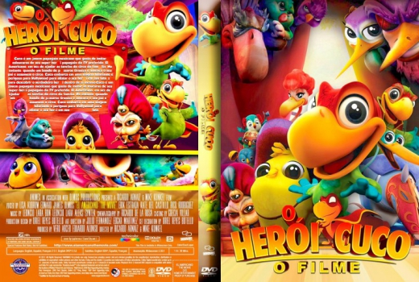

Outro Título:El Americano: The Movie
País:Mexico, 97 minutos
Idiomas falados:Espanhol, Português
Gênero(s):Animação, Família
Diretor(s):Ricardo Arnaiz, Mike Kunkel
Escritor(es):Richard Pursel, Phil Roman, Dulce Belchez
Codec:MPEG-2 (DVD)
Número: 5850


Certificado:
Sinopse:
O filme seguirá Cuco (Rico Rodriguez), um mexicano pré-adolescente despreocupado papagaio, cuja missão é se aventurar para Hollywood e contar com a ajuda de seu herói favorito, a fim de ajudar seu pai, Gayo (Edward James Olmos) e proteger seu circo da ameaça de Martin Kingfisher (Cheech Marin) e seus capangas.
Elenco:

Tipo de mídia: DVD5,
Legendas: Português, Sem Legendas
Alugado: Não
Tela: Anamorphic Widescreen